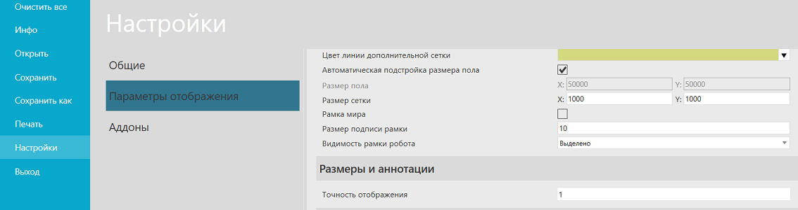
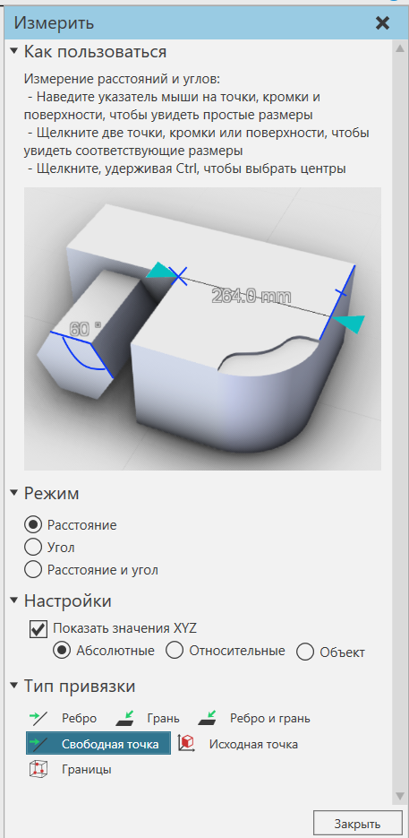

Измерение компонентов |
|
Измерения могут быть выполнены для оценки расстояния и/или угла между двумя точками в трехмерном мире. Приблизительное значение измерения контролируется параметром Точность отображения, который влияет на количество цифр, отображаемых справа от десятичной точки. 1.Перейдите на вкладку Файл, затем на панели нажмите Настройки, а затем нажмите Параметры отображения. 2.В разделе Размеры и аннотации в поле Точность отображения введите количество цифр, которое необходимо отобразить справа от десятичной точки для измерения. 3.Нажмите Ok. 
Измерение может показывать как расстояние, так и угол между двумя линиями. 1.На вкладке Главная в группе Инструменты нажмите Измерение. 2.На панели задач Измерить отредактируйте один или несколько параметров для выбора первой точки измерения.  3.В трехмерном мире щелкните точку. 4.На панели задач Измерить отредактируйте один или несколько параметров для выбора второй точки измерения. 5.В 3D-мире наведите курсор на местоположение для предварительного просмотра измерения. 6.Нажмите на точку, чтобы увидеть результаты в 3D-мире и вывести их на панели Вывод. 7.Если вы хотите выйти из команды Измерить, нажмите ESC или на панели задач Измерить нажмите Закрыть. |